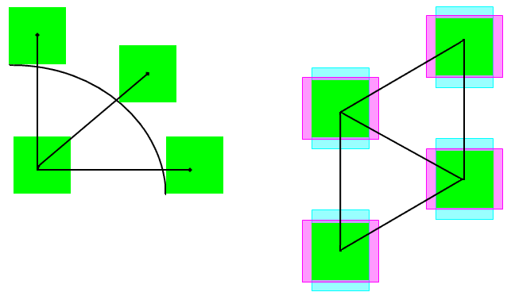

|
 |
 |
||||||
|
|
|
||||||
The built-in layer constraint definition oacMinCenterToCenterSpacing specifies the minimum distance required between two geometries on a specified layer. The distance is specified in database units.
oacMinCenterToCenterSpacing constraints should be specified for cut layers only. The square nature of cut geometries is what allows the spacing to measured from the center of one geometry to the center of a second.
In particular, this constraint is used to specify the spacing between adjacent vias. An alternative way of specifying spacing constraints for adjacent vias is oacMinAdjacentViaSpacing.
| Constraint type: | oaLayerConstraint |
| Value types: | oaIntValue |
| Database types: | oaDesign, oaTech |
| Object types: | oaStdVia, oaCustomVia, oaAppObject |
The following value types are supported by this constraint:
This oaIntValue represents the minimum distance required between the vias in database units. The distance is measured from the center of the first cut shape to the center of the second cut shape.
Units: DBU

Minimum spacing constraints help to ensure that geometries are not merged together during fabrication.
Copyright 2002 - 2010 Cadence Design Systems, Inc.
All rights reserved.